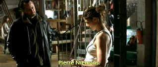
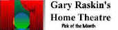

| Crimson
Rivers (SE) /B,B- |
| Columbia/2000/105/ANA
2.35 |
Two detectives track vastly
different crimes in the provincial French mountains. What does a
desecrated tomb in the village of Sarzac have to do with a mutilation
murder in the university town of Guernon
some sixty miles away?
Crimson Rivers explores the crimes and takes some time to develop
characters with a measure of individuality. It’s a serial killer flick directed by Matthew Kassovitz, one
of France’s hot cinema youngbloods.
Jean Reno plays legendary Parisian Lieutenant Pierre Niemans
called to Guernon to investigate a horrible crime. Vincent
Cassel is the younger hip Paris cop Max Kerkerian on assignment in
Sarzac. Reno is the epitome of cool, methodically pursuing his
investigation, while Cassel is a bundle of frazzled energy. They are a
good combination. The plotting gets somewhat hokey however, and the
wrap-up is absurdly sophomoric.
 |
| Serial
killer hunter meets avalanche expert. ©Columbia |
Kassovitz films Crimson Rivers
with a familiar but effective point of view style of camera. The editing
and pace are polished. The script is inconsistent. Interesting
characters are pitted against boring cardboard cliché figures.
Ultimately, the cool characters win out over the bad thriller elements There's
one especially unfortunate altercation with local
skinheads that stops the movie dead in its tracks. Too bad the scripting
was not as agile as the the dumb martial arts diversion in that scene. A
good score helps moves action effectively.
The flick's natural feel for this flick is pure
gloss, however, the transfer is not quite as polished as I would have liked. Black level is
all right, but it too could have provided more sparkle. Most scenes are
reasonably sharp. Colors are inconsistently saturated without hurting
the overall look of the film. Lots of snow sequences are difficult to
capture or transfer with perfect exposure. Dark interior shadow details
are slightly pinched in range. Yellow English
subtitles provide a reasonable translation. The English dubbing is
pretty good if you care to use it with Reno dubbing himself.
Crimson Rivers is delivered as a wounded
special edition. Audio commentary by director Kassovitz is in French
with no accompanying translation titles. The fifty minute documentary is
very good and is titled as are the additional shorts. There's also a
story board section.
|
|
|
|

Selections from the Feature Archive include articles on
Akira Kurosawa, Blonde Bimbos,
Frank
Darabont, Steven Culp,
John
Herzfeld or Vietnam: The
Hollywood Pariah, and many more....
Hitchcock
on DVD
Information and review links to Alfred Hitchcock on DVD


Glenn Erickson's insightful DVD reviews have been a Internet fixture for several
years. Check out some of his sophisticated feature articles. Currently hosted by
DVD Talk.
 Have you visited Home Theater
Talk lately? One of the friendliest places on the Net for Home Theater and DVD discussion, you
can get help for installation problems or simply share your opinions with other Vidiots. Have you visited Home Theater
Talk lately? One of the friendliest places on the Net for Home Theater and DVD discussion, you
can get help for installation problems or simply share your opinions with other Vidiots.

A new entry in the 2001 home theater site sweepstakes. Chief focus on
hardware reviews with a smattering of software.
An on-line Home Theater magazine with excellent hardware reviews,
including thorough and responsible research. Check it out.
|